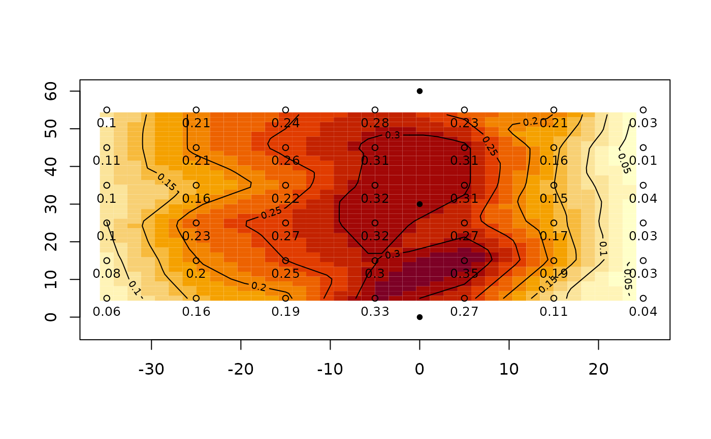

catchcan.RdFour catch can data sets, one each for lateral, hose pull, and solid set agricultural sprinkler systems, and one for a landscape (turf) irrigation system.
data("catchcan")A named list of 4 catch can data sets; lateral, traveler, solid.set and landscape.
catchcan$lateral6x7 matrix of catch can data, units are in./hr. Grid spacing of 10 ft x 10 ft
lna numeric vector of catch can data - nth can to left of lateral
rna numeric vector of catch can data - nth can to right of lateral
catachcan$traveler16X2 matrix of catch can data. Effective (lane) spacing is 224 ft in example.
stationdistance (ft) of catch can relative to hose (0), neg. is left of hose in plan view
depthcollected depth, in.
catchcan$solid.set4x4 matrix of catch can data, units are in. Can grid spacing of 20 ft x 20 ft inside of 4 operating sprinklers on 80x80 ft sprinkler x lateral spacing.
catchcan$landscape9X7 matrix of catch can data, units are in ml. Can opening is 72 mm (7.2 cm). Can grid spacing of 9 ft X 9 ft.
(lateral)Form II-1, item 10, p.29. Utah State University, Logan, Utah. https://pdf.usaid.gov/pdf_docs/PNAAG745.pdf
(traveler)Table 1, pg. 8. Evans, R.O., Barker J.C., Smith J.T., Sheffield R.E. 1997b. Field calibration procedures for animal wastewater application equipment, hard hose and cable tow traveler irrigation system. NC Cooperative Extension Service publication AG-553-2. Raleigh, NC.
(solid set)Work Sheet 1. p. 13. Evans, R.O., Barker J.C., Smith J.T., Sheffield R.E. 1997a. Field calibration procedures for animal wastewater application equipment, stationary sprinkler irrigation system. NC Cooperative Extension Service publication AG 553-1. Raleigh, NC.
Mirriam and Keller, 1978. Farm System Irrigation Evaluation: A Guide for Management. Form II-1, item 10, p.29. Utah State University, Logan, Utah. https://pdf.usaid.gov/pdf_docs/PNAAG745.pdf
Evans, R.O., Barker J.C., Smith J.T., Sheffield R.E. 1997b. Field calibration procedures for animal wastewater application equipment, hard hose and cable tow traveler irrigation system. NC Cooperative Extension Service publication AG-553-2. Raleigh, NC. https://p2infohouse.org/ref/32/31084/ag-553-2.pdf
Evans, R.O., Barker J.C., Smith J.T., Sheffield R.E. 1997a. Field calibration procedures for animal wastewater application equipment, stationary sprinkler irrigation system. NC Cooperative Extension Service publication AG 553-1. Raleigh, NC. https://irrigation.wordpress.ncsu.edu/files/2017/01/ag-553-1-stationary-sprinkler.pdf
library(fields) # for easy grid construction
#> Loading required package: spam
#> Spam version 2.8-0 (2022-01-05) is loaded.
#> Type 'help( Spam)' or 'demo( spam)' for a short introduction
#> and overview of this package.
#> Help for individual functions is also obtained by adding the
#> suffix '.spam' to the function name, e.g. 'help( chol.spam)'.
#>
#> Attaching package: ‘spam’
#> The following objects are masked from ‘package:base’:
#>
#> backsolve, forwardsolve
#> Loading required package: viridis
#> Loading required package: viridisLite
#>
#> Try help(fields) to get started.
data(catchcan)
use.data<-catchcan$lateral #matrix can be viewed as plan view of catch data
#x,y matrix 10 ft x 10 ft catch can spacing
x<-seq(-35,25,10) # x=0 is lateral position
y<-seq(55,5,-10) #plan view top to bottom
grd<-list(x,y) # prepare list for make.surface function [fields]
grid<-make.surface.grid(grd)
plot(grid)
labels<-matrix(t(use.data),ncol=1)#transpose matrix and stack rows into 1 column
text(grid[ ,1],grid[ ,2],labels,cex=0.8,pos=1) # plot catch data at collection point
## or plot using function plotss. Shows test data from 1 lateral with no overlap.
cdata<-cbind(grid[ ,1],grid[ ,2],labels) #construct required catch can data matrix
sp.x<-rep(0,3);sp.y<-seq(60,0,-30)# sprinkler spacing (y) = 30 ft, plot top to bottom
sploc<-cbind(sp.x,sp.y) #construct required sprinkler location matrix
plotss(cdata,sploc)

#> [1] -38 28 -6 63